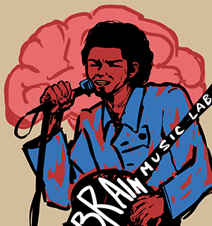

Project One
This is currently still in the works, but I am remaking this drawing in illustrator for my text class.
This is the home page of my semantic portfolio. Here you can find links to various projects and information about me.
This is currently still in the works, but I am remaking this drawing in illustrator for my text class.

This is a brief animation that I am still working on as of right now. (started: 09.03.25)